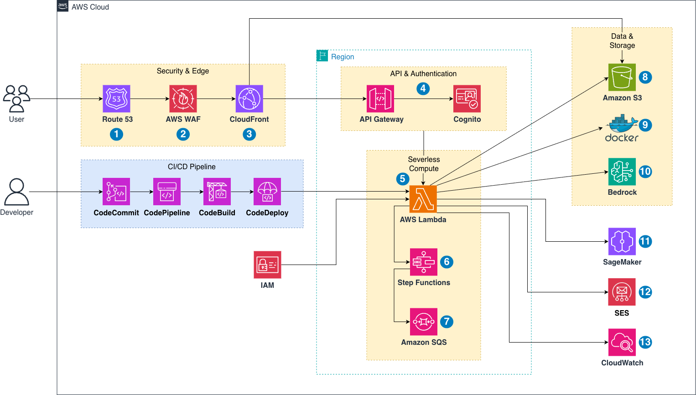

FitAI Challenge là website được phát triển dành cho người Việt Nam, nhằm thúc đẩy phong trào tập luyện thể dục thể hình thông qua các thử thách thể thao có yếu tố gamification và trí tuệ nhân tạo (AI). Website sử dụng AI Camera để nhận diện và đếm động tác tập luyện như push-up, squat, plank, jumping jack,… đồng thời phân tích tư thế nhằm đưa ra đánh giá chính xác. Người dùng có thể tham gia thử thách cá nhân để nhận điểm thưởng FitPoints khi hoàn thành nhiệm vụ, và quy đổi chúng thành voucher, quà tặng, hoặc ưu đãi từ các đối tác thương mại. FitAI Challenge hướng đến đối tượng sinh viên, giới trẻ, và người đi làm - những người cần động lực duy trì thói quen tập luyện trong cuộc sống bận rộn.
Vấn đề hiện tại
Tại Việt Nam, các ứng dụng tập luyện hiện có phần lớn tập trung vào hướng dẫn hoặc đếm bước cơ bản, chưa có nền tảng nào kết hợp giữa AI nhận diện động tác, gamification và cộng đồng thử thách thể thao online.
Người dùng thường thiếu động lực để tập đều đặn, không có công cụ đánh giá chính xác hiệu suất tập luyện. Ngoài ra, các phòng gym hoặc thương hiệu thể thao cũng thiếu kênh tương tác sáng tạo với nhóm khách hàng trẻ năng động.
Giải pháp
FitAI Challenge sử dụng AI Camera để nhận diện, đếm và đánh giá độ chính xác của động tác tập luyện thông qua Computer Vision.
Toàn bộ dữ liệu tập luyện của người dùng được lưu trữ và xử lý qua AWS Cloud với kiến trúc serverless:
AWS Lambda: xử lý dữ liệu AI và yêu cầu backend. AWS S3: lưu trữ video, hình ảnh, và kết quả tạm thời. Website được phát triển bằng React Native với giao diện thân thiện, trực quan. Người dùng có thể: Tham gia thử thách cá nhân, nhóm hoặc toàn quốc. Nhận FitPoints khi hoàn thành bài tập. Đổi FitPoints lấy voucher hoặc quà từ đối tác (Shopee, Grab, CGV,…). Theo dõi bảng xếp hạng và chia sẻ thành tích lên mạng xã hội.
Lợi ích và hoàn vốn đầu tư (ROI)
Đối với người dùng:
Tạo động lực luyện tập mỗi ngày thông qua cơ chế thử thách và phần thưởng.
Được AI hỗ trợ đánh giá và ghi nhận thành tích minh bạch.
Gắn kết cộng đồng tập luyện thông qua leaderboard và feed chia sẻ.
Đối với doanh nghiệp đối tác:
Kênh quảng bá thương hiệu gắn liền với lối sống lành mạnh.
Tiếp cận tệp khách hàng trẻ – năng động – có ý thức về sức khỏe.
Đối với đội ngũ phát triển:
Mở ra mô hình kinh doanh “Fitness + Gamification + Thương mại điện tử” độc đáo tại Việt Nam.
Cấu trúc cloud serverless giúp giảm chi phí vận hành và dễ mở rộng.
MVP có thể phát triển trong 3 tháng đầu, với chi phí hạ tầng thấp (ước tính 0,80 USD/tháng trên AWS).
FitAI Challenge là nền tảng huấn luyện thể thao thông minh áp dụng kiến trúc AWS Serverless kết hợp AI/ML pipeline. Mục tiêu của hệ thống là ghi nhận dữ liệu luyện tập, phân tích hiệu suất, và sinh phản hồi tự động bằng AI để huấn luyện người dùng một cách cá nhân hóa. Dữ liệu từ ứng dụng web được gửi lên Amazon API Gateway, xử lý bởi AWS Lambda (Java) và lưu trữ trong Amazon S3 cùng Docker Database.

Dịch vụ AWS sử dụng:
| Dịch vụ | Vai trò |
|---|---|
| Amazon Route 53 | Quản lý tên miền và định tuyến lưu lượng đến CloudFront. |
| AWS WAF | Bảo vệ tầng frontend và API khỏi các tấn công DDoS, OWASP. |
| Amazon CloudFront | Phân phối nội dung tĩnh (web app build từ Java web, HTML, CSS, JS). |
| Amazon API Gateway | Tiếp nhận yêu cầu từ frontend và chuyển tiếp đến các Lambda. |
| AWS Lambda (Java) | Xử lý logic nghiệp vụ (đăng ký, đăng nhập, upload dữ liệu, scoring, AI pipeline). |
| AWS Step Functions & SQS | Điều phối workflow giữa các Lambda và SageMaker/Bedrock. |
| Amazon Cognito | Xác thực người dùng, quản lý phiên đăng nhập và phân quyền. |
| Amazon S3 | Lưu trữ dữ liệu thô, video, ảnh và kết quả phân tích. |
| Docker | Chạy backend Java Spring Boot API và lưu trữ database (PostgreSQL hoặc MongoDB). |
| Amazon SageMaker | Chạy inference mô hình computer vision/pose estimation. |
| Amazon Bedrock | Sinh phản hồi bằng ngôn ngữ tự nhiên, gợi ý luyện tập, tổng kết kết quả. |
| Amazon SES | Gửi email xác thực và thông báo kết quả người dùng. |
| Amazon CloudWatch | Theo dõi log, giám sát Lambda, chi phí và hiệu suất. |
| IAM | Quản lý quyền truy cập và bảo mật giữa các dịch vụ. |
| AWS CodePipeline / CodeBuild / CodeDeploy | CI/CD pipeline để tự động triển khai Java backend và Lambda. |
Thiết kế thành phần
Frontend Layer:
Web app hiển thị giao diện người dùng, kết nối đến API Gateway.
Nội dung được build và deploy lên S3 + CloudFront.
Người dùng truy cập qua Route 53 → WAF → CloudFront → API Gateway.
Application Layer:
API Gateway tiếp nhận yêu cầu từ frontend.
Lambda (Java) thực thi các chức năng nghiệp vụ:
AuthLambda: đăng nhập / xác thực người dùng.
UploadLambda: nhận dữ liệu tập luyện, hình ảnh hoặc video.
AIPipelineLambda: kích hoạt workflow AI (SageMaker + Bedrock).
SaveResultLambda: lưu kết quả huấn luyện và phản hồi AI.
Các giai đoạn triển khai
| Giai đoạn | Mô tả | Kết quả đạt được |
|---|---|---|
| 1. Cấu hình hạ tầng AWS | Triển khai Route 53, WAF, S3, Lambda, API Gateway, Cognito, Docker DB. | Hạ tầng cơ bản sẵn sàng. |
| 2. CI/CD Pipeline | Thiết lập CodeCommit + CodeBuild + CodeDeploy cho Java backend và Lambda. | Tự động hóa triển khai backend. |
| 3. Xây dựng Lambda Functions (Java) | Tạo các Lambda cho Upload, Auth, AI Pipeline, Save Result. | Hoàn thiện backend serverless. |
| 4. AI Pipeline | Kết nối SageMaker (pose estimation model) và Bedrock (LLM feedback). | AI hoạt động trơn tru, phản hồi tự động. |
| 5. Triển khai Web App | Build web → Deploy lên S3 + CloudFront. | Giao diện người dùng hoạt động online. |
| 6. Giám sát & Tối ưu chi phí | Dùng CloudWatch + Cost Explorer theo dõi hoạt động. | Hệ thống ổn định, chi phí thấp. |
Có thể xem chi phí trên AWS Pricing Calculator
Hoặc tải tệp ước tính ngân sách.
Chi phí hạ tầng
Tổng: 10,74 USD / tháng; 128,88 USD / 12 tháng
Ma trận rủi ro
Chiến lược giảm thiểu
Kế hoạch dự phòng
Cải tiến kỹ thuật:
Giá trị dài hạn:
Xây dựng cộng đồng người Việt yêu thích thể thao và sức khỏe bền vững.
Trở thành nền tảng tiên phong “AI + Fitness + Gamification” tại Việt Nam.